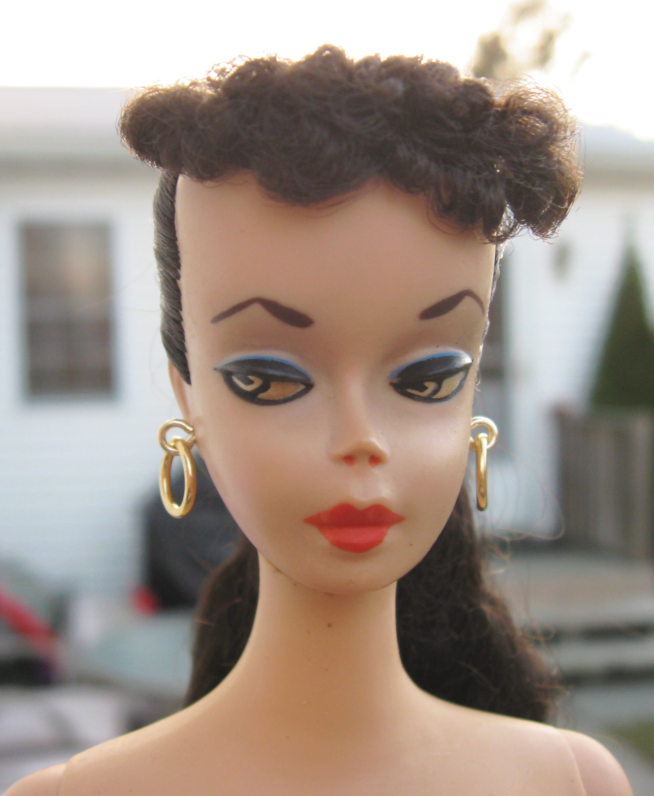
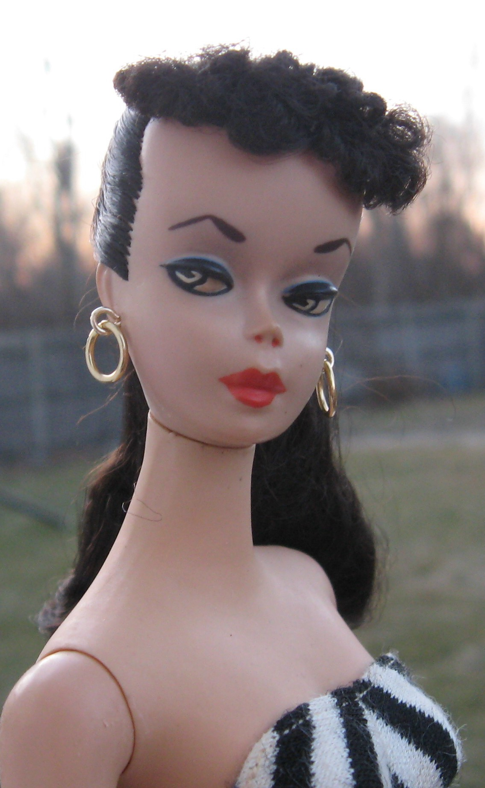
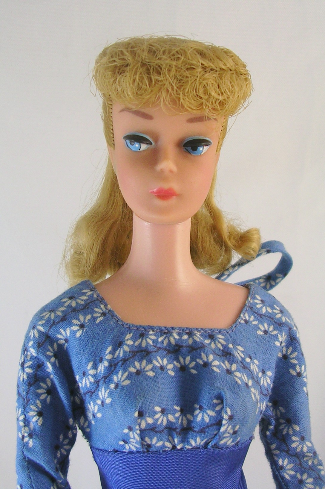

<h1>Vintage Barbie Collecting</h1>
<h3>Your source to learn everything about Barbie from 1959 through 1986</h3>


<h3>We will first learn about ponytail Barbies</h3>
<ul>
  <li>Number 1</li>
  
  <li>Number 2</li>
  
  <li>Number 3</li>
  
  <li>Number 4</li>
  
  <li>Number 5</li>
  
  <li>Number 6</li>
  
</ul>


<!-- TODO 1: Create the HTML Boilerplate -->

<!-- TODO 2: Add Your previous projects' HTML into the public folder -->

<!-- TODO 3: Take screenshots of your project previews and add the images to the images folder -->

<!-- TODO 4: Add titles/subtitles etc. -->

<!-- TODO 5: Add a link to the project pages -->

<!-- TODO 6: Add images to show the project previews
HINT for TODO 6: You can use the height attribute set to 200 to make the image smaller:
https://developer.mozilla.org/en-US/docs/Web/HTML/Element/img#attr-height -->

<!-- TODO 7: Add the Contact Me and About Me page links -->